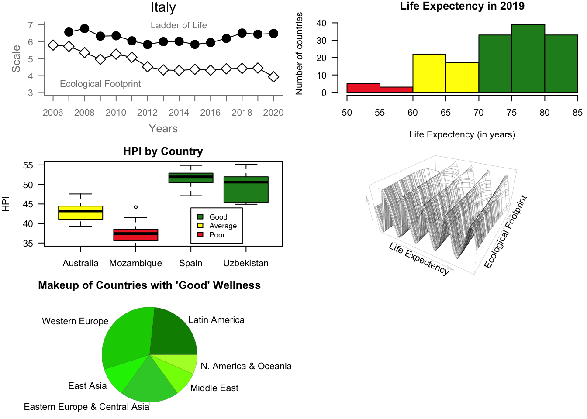

library(readxl)
par(mfrow=c(3, 2))
# Scatterplot
italy = read_xlsx("/Users/laurencampbell/Documents/UTD-Y3-Fall/Data Visualization/DataV/posts/Italy.xlsx")
print(italy)# A tibble: 15 × 6
Year `Life Expectancy (years)` Ladder of life (0-10…¹ Ecological Footprint…²
<dbl> <dbl> <dbl> <dbl>
1 2006 81.2 NA 5.80
2 2007 81.4 6.57 5.73
3 2008 81.6 6.78 5.37
4 2009 81.8 6.33 4.97
5 2010 82 6.35 5.27
6 2011 82.1 6.06 5.09
7 2012 82.3 5.84 4.53
8 2013 82.5 6.01 4.34
9 2014 82.6 6.03 4.31
10 2015 82.8 5.85 4.38
11 2016 83 5.95 4.33
12 2017 83.2 6.20 4.41
13 2018 83.4 6.52 4.43
14 2019 83.5 6.45 4.45
15 2020 82.3 6.49 3.93
# ℹ abbreviated names: ¹`Ladder of life (0-10)`, ²`Ecological Footprint (g ha)`
# ℹ 2 more variables: HPI <dbl>, `HPI Rank` <dbl>ls(italy)[1] "Ecological Footprint (g ha)" "HPI"
[3] "HPI Rank" "Ladder of life (0-10)"
[5] "Life Expectancy (years)" "Year" x <- italy $ Year
y1 <- italy$ "Ladder of life (0-10)"
y2 <- italy$ "Ecological Footprint (g ha)"
par(las=1, mar=c(4, 4, 2, 1))
plot.new()
plot.window(range(x), c(3, 7))
lines(x, y1)
lines(x, y2)
points(x, y1, pch=19, cex=2)
points(x, y2, pch=23, bg="white", cex=2)
par(col="grey50", fg="grey50", col.axis="grey50")
axis(1, at=seq(2006, 2020, 1))
axis(2, at=seq(3, 7, 1))
box(bty="L")
mtext("Years", side=1, line=2.5, cex=0.8, col="gray50")
mtext("Scale", side=2, line=2, las=0, cex=0.8, col="gray50")
mtext("Italy", side=3, line=.75, cex=1, col="black")
text(2009, 3.5, "Ecological Footprint")
text(2014, 7, "Ladder of Life")
par(mar=c(5.1, 4.1, 4.1, 2.1), col="black", fg="black", col.axis="black")
## Histogram
life = read_xlsx("/Users/laurencampbell/Documents/UTD-Y3-Fall/Data Visualization/DataV/posts/LifeEx.xlsx")
y3 <- life $ "Life Expectancy (years)"
par(mar=c(4, 4, 1, 0))
hist(y3, breaks = 10, xlim=c(50,85), ylim=c(0,45),
col=c("firebrick2", "firebrick2", "yellow1", "yellow1", "forestgreen", "forestgreen", "forestgreen"),
freq=TRUE, main="Life Expectency in 2019", xlab="Life Expectency (in years)", ylab="Number of countries")
##lines(x, dnorm(x), lwd=2)
par(mar=c(5.1, 4.1, 4.1, 2.1))
## Boxplot
boxy = read_xlsx("/Users/laurencampbell/Documents/UTD-Y3-Fall/Data Visualization/DataV/posts/box.xlsx")
par(mar=c(3, 4, 2, 1))
boxplot((boxy$"HPI" ~ boxy$"Country"), data = boxy,
xlab="Country",
ylab="HPI",
main="HPI by Country",
ylim=c(35,55),
col =c("yellow1", "firebrick2", "forestgreen", "forestgreen"))
legend(3, 44, inset=.02, legend=c("Good", "Average ", "Poor"),
fill = c("forestgreen", "yellow1", "firebrick2"), cex=0.8)
## Persp
peru = read_xlsx("/Users/laurencampbell/Documents/UTD-Y3-Fall/Data Visualization/DataV/posts/peru.xlsx")
x1 <- peru$"Life Expectancy (years)"
y4 <- peru$"Ecological Footprint (g ha)"
f <- function(x1, y4) { r <- sqrt(x1^2+y4^2); 10 * sin(r)/r }
z <- outer(x1, y4, f)
z[is.na(z)] <- 1
## 0.5 to include z axis label
par(mar=c(0, 0.5, 1, 0), lwd=0.1)
persp(x1, y4, z, theta = 30, phi = 30, expand = 0.5,
xlab="Life Expectency",
ylab="Ecological Footprint",
zlab =" ")
##legend()
## Pie Chart
well = read_xlsx("/Users/laurencampbell/Documents/UTD-Y3-Fall/Data Visualization/DataV/posts/well.xlsx")New names:
• `` -> `...6` x <- well$"ContTotal"
names(x) <- c("Latin America", "Western Europe",
"East Asia", "Eastern Europe & Central Asia",
"Middle East", "N. America & Oceania")
par(mar=c(0, 0.5, 1, 0))
pie(x, col = c("green4", "green3", "green2", "limegreen", "chartreuse", "greenyellow"), main="Makeup of Countries with 'Good' Wellness")